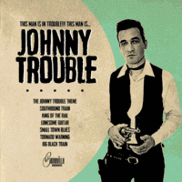

Johnny Trouble - Johnny Trouble (EP, 2016)
01 - The Johnny Trouble Theme (1:20)
02 - Southbound Train (3:30)
03 - King Of The Rail (2:45)
04 - Lonesome Guitar (2:56)
05 - Small Town Blues (3:01)
06 - Tornado Warning (2:58)
07 - Big Black Train (3:15)
© Bonneville Records :: [Digital]
Notes
Review
362/366 (Project 366)
Very-very scenic, artistic and charismatic musician. All his work is based on certain things, but quite often the "good old" songs sound in a completely refreshed form and a little differently (with a bias towards one or another particular style). The arrangement and atmosphere from raw, nicely unkempt, purely rustic can be transformed into absolutely amazing cinema art and fantastic sounding quality. This release contains charming versions of songs with a very relief sound. In precise, Modern Country with tides of Rockabilly and breezes of General Rock and Pop of good taste. Extremely epic and sonorous sound. Highly beautiful tone of voice. Original tunes.
"The Johnny Trouble Theme" is a great opener. So desperate, so foggy and misty.. like a marvelous soundtrack. But trouble whistling fades, followed by the second song. "Southbound Train" with all its profound sides. Such a delicious and succulent tune. But the lyrics are the meaning and motivator of the composition. However, the beauty of musical instruments is also worth noting. "King Of The Rail" is a kind of artist's distinctiveness. Jaunty motive, confident Rockabilly and unrelenting melody. Some guitar twangin' is also lovely. "Lonesome Guitar" is another side of art. More rustic, more songly, lightly ironic and pensive a bit. Great adventure theme. I have never heard the next song before, and actually "Small Town Blues" really impressed me. With its vibe - such a telling tune. "Tornado Warning" is a very conceptual and strong composition. Very pleasant overflows from a relatively forcing motive into a very melodic and fab one. Though the return to anxiety is potently done too! The last track "Big Black Train" is, perhaps, a fashionable combination of the most striking peculiarities of Johnny Trouble. Voice, some traditional and folk motifs, road themes, topnotch arrangements, rockin' groove. So, like the whole EP - Country Folk with Rock music solidness, Rockabilly cheer, melodic sound and energies.
I cannot say that this will be a very accurate statement, but there is a certain sense of 'drinking' in these lyrics. In the context that.. sometimes.. it is a forced companion of certain sensations, feelings, circumstances and experiences. Nevertheless, music is a much more successful and reliable friend. As a means of self-expression, so in the context of healing the listener.